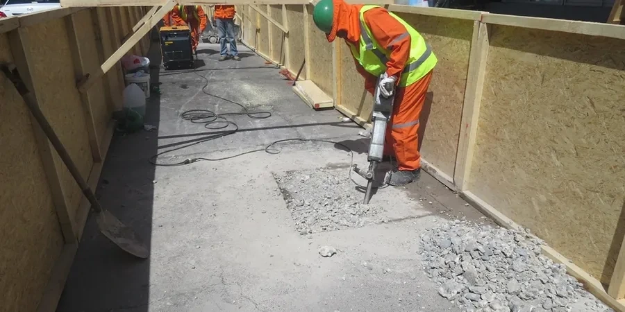

En nuestra oficina de Valparaíso ofrecemos servicios integrales de geotecnia para proyectos urbanos, portuarios e industriales en la región. Combinamos experiencia regional consolidada con equipos de laboratorio calibrados para caracterizar el subsuelo, diseñar cimentaciones, evaluar estabilidad de taludes y monitorear obras. Trabajamos bajo normativas chilenas e internacionales, garantizando informes técnicos conformes a la autoridad. Desde estudios de mecánica de suelos hasta instrumentación geotécnica, acompañamos cada etapa del proyecto con soluciones adaptadas a la geología local. Conozca más sobre nuestras capacidades en columnas de grava y tablestacas.

Alcance del trabajo en Valparaíso
Video del procedimiento
Condiciones geotécnicas locales en Valparaíso
Nuestro equipo en Valparaíso cuenta con experiencia regional consolidada en la ejecución de estudios de mecánica de suelos, ensayos de penetración estándar (SPT) y perforaciones con recuperación de muestras inalteradas. Mantenemos un laboratorio geotécnico calibrado y acreditado, con equipos para ensayos de granulometría, corte directo y consolidación. Trabajamos en estrecha coordinación con contratistas locales y la Dirección de Obras Municipales, asegurando que todos los informes cumplan con los códigos chilenos vigentes. Nuestra presencia en la región nos permite responder con rapidez a las necesidades de proyectos residenciales, viales y portuarios.
¿Necesita una evaluación geotécnica?
Respuesta en menos de 24h.
WhatsApp directo: +56 9 7709 2993La forma más rápida de cotizar
Email: contacto@geotecnia1.biz
Nuestros servicios
Dudas habituales
¿Qué condiciones geotécnicas debo considerar al construir en los cerros de Valparaíso?
Los cerros de Valparaíso presentan suelos residuales y coluviales con pendientes pronunciadas. Es fundamental realizar un estudio de mecánica de suelos que incluya ensayos de corte directo y permeabilidad, además de evaluar la estabilidad de taludes. El nivel freático puede ser somero en invierno, aumentando el riesgo de deslizamientos. Recomendamos incorporar drenajes profundos y sistemas de contención como muros anclados o tablestacas.
¿Cómo afecta la sismicidad de la zona al diseño de fundaciones en Valparaíso?
Valparaíso se encuentra en una zona de alta sismicidad (zona 3 según NCh433). Esto exige diseñar fundaciones que resistan cargas dinámicas, considerando posibles fenómenos de licuación en arenas saturadas y asentamientos diferenciales. Se recomienda realizar ensayos de penetración estándar (SPT) y análisis de respuesta sísmica del sitio para definir el tipo de cimentación (superficial o profunda) y el refuerzo necesario.
¿Qué normativa chilena regula los estudios geotécnicos para edificaciones?
La normativa principal es el Decreto Supremo DS 60 del Ministerio de Vivienda y Urbanismo, que establece los requisitos para estudios de mecánica de suelos. Complementariamente, se aplica la NCh433 para diseño sísmico y las guías del Manual de Carreteras para obras viales. Los informes deben ser firmados por un ingeniero civil geotécnico y presentados a la Dirección de Obras Municipales para obtener permisos de construcción.
¿Qué tipo de ensayos de campo son más comunes en proyectos de Valparaíso?
Los ensayos más frecuentes incluyen el SPT (ensayo de penetración estándar) para evaluar la resistencia del suelo, el ensayo de veleta en arcillas blandas, y la prueba de permeabilidad en suelos granulares. También se realizan calicatas para muestreo directo y, en proyectos portuarios, sondeos con recuperación de muestras inalteradas. La elección depende del tipo de obra y las condiciones del terreno.